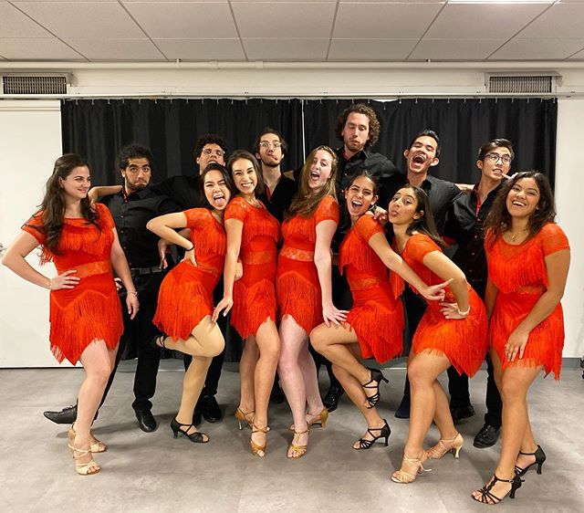

About Me
I grew up in Miami, Florida surrounded by a Latinx community and playing video games such as Starcraft 2 and Call of Duty. I am currently a rising Sophomore at Northeastern University studying computer science. During my time at Northeastern I joined a salsa/bachata dance club called Kaliente in order to maintain some resemblace of home while I was away studying in Boston. Growing up in Miami, a city centered around cars, I am fascinated with the urban-planning model called superblocks that are being implemented in Spain! I hope to one day travel to Spain and experience their culture rich cities.
Projects
Schedify
A dynamic website that makes connecting with friends and families easier by enabling users to schedule, share, and create events.
Personal website
My personal website that displays my achievements in an interactive way.

Photography
I love to offer my perspective of the world around me through photography. During quarantine I have found that you can offer magical experiences through mundane objects.
Looking around my desk, I was inspired by the figurines that give my workspace character. When I looked at the fortune cookie I noticed how beautful reflected light can be and the magical experience it gives. When I prepared to take a picture of the fortune cookie I noticed that the reflect light in front of Luke Skywalker makes it seem like he is using the force.
I was drinking coffee one day, which is rare, when I noticed that the foam created by the coffee looked like clouds. Then when I leaned the cup forward so as to drink it, the coffee resembled the ocean and the back of the cup resembled the sun. Finally, I just added a source of light behind the cup and then BAM. The photo was created.
Blog Posts
Quarantine Hobby
I have been exploring photography as a medium. I use to draw, but I stopped after joining a sports team in my middle school. Now that I am in quarantine, I decided to pick up a creative hobby such as photography.
What Lead Me to Fencing
After watching the movie 300 I was motivated to learn how to use a sword. While I did not find a studio to teach me how to fight like a spartan, I stumbled across the sport of fencing specifically foil.